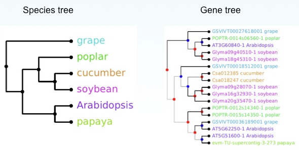

Tree ReconciliationOngoing development in collaboration with the Tree Reconciliation working group and the Thousand Plant Transcriptome project (oneKP) is focused on using the existing phylogenetic tree to address evolution of gene families. Work is underway to provide a gene-species tree reconciliation service that will reconcile gene families generated by the oneKP project with the green plant species phylogeny. Gene Species Tree ReconciliationThis sample image shows a gene tree for a putative microtube binding protein for six dicot plant species. Data are are derived from transcript data from onekp project; (gene family courtesy of John Bowers and Jim Leebens-Mack). The gene tree was generated using TreeBeST, with the species tree on the left as a guide tree. Red nodes indicate inferred gene duplication events and blue nodes represent speciation. Created in collaboration with:
|